Paper recordWilliams Collection: Catalog Cards
Paper recordWilliams Collection: Catalog Cards Paper recordWilliams Collection: Catalog Cards
Paper recordWilliams Collection: Catalog Cards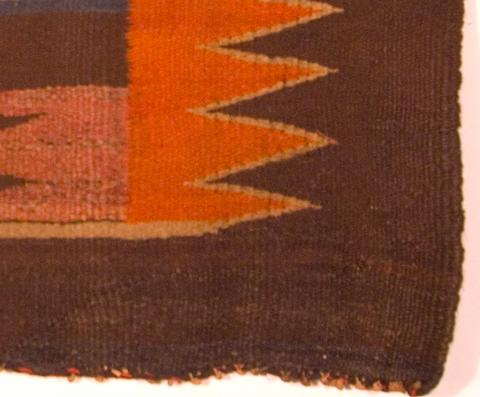
TextileSaddle Blanket 2148-622 TextileChief's Shoulder Blanket 1074-106
TextileChief's Shoulder Blanket 1074-106 TextileSaddle Blanket 1633-76
TextileSaddle Blanket 1633-76 TextileRug 2148-611
TextileRug 2148-611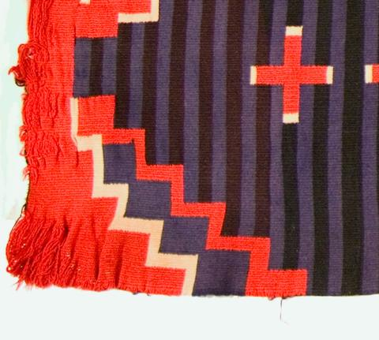
TextileBlanket 2148-597 Paper recordPhotos Among Paperwork
Paper recordPhotos Among Paperwork Paper recordWilliams Collection: Catalog Cards
Paper recordWilliams Collection: Catalog Cards PhotographTaos
PhotographTaos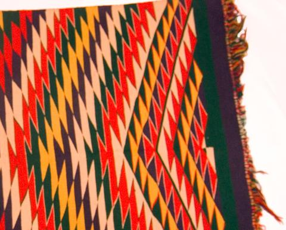
TextileSaddle Blanket 1074-112 Paper recordWilliams Collection: Catalog Cards
Paper recordWilliams Collection: Catalog Cards![[Brochure page: the Shrine of the Americas and Williams's Kodachrome slide collection]](photography/images/thumb/HRC-4872.jpg) Photograph[Brochure page: the Shrine of the Americas and Williams's Kodachrome slide collection]
Photograph[Brochure page: the Shrine of the Americas and Williams's Kodachrome slide collection]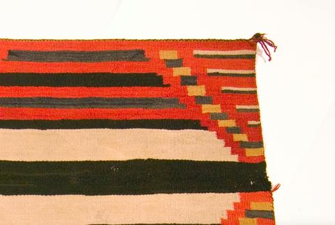
TextileChief Blanket 2148-606![[Reprint from "International Who's Who," January 1948]](photography/images/thumb/HRC-4849.jpg) Photograph[Reprint from "International Who's Who," January 1948]
Photograph[Reprint from "International Who's Who," January 1948] Paper recordPhotos Among Paperwork
Paper recordPhotos Among Paperwork TextileSaddle Blanket 1074-112
TextileSaddle Blanket 1074-112 TextileChief's Shoulder Blanket 1074-106
TextileChief's Shoulder Blanket 1074-106 Paper recordPhotos Among Paperwork
Paper recordPhotos Among Paperwork Paper recordWilliams Collection: Catalog Cards
Paper recordWilliams Collection: Catalog Cards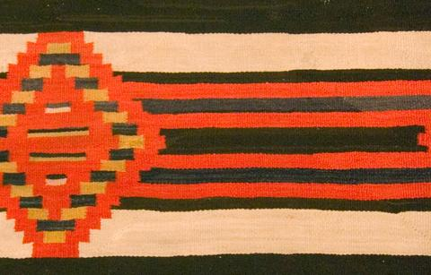
TextileChief Blanket 2148-606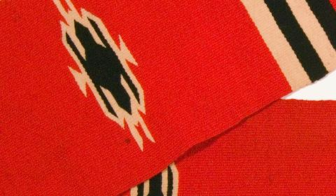
TextileWoman's Shawl 2148-586![[Williams on horseback in a parade]](photography/images/thumb/HRC-4879.jpg) Photograph[Williams on horseback in a parade]
Photograph[Williams on horseback in a parade] TextileBlanket 2148-597
TextileBlanket 2148-597 PhotographTaos Girl and Deer
PhotographTaos Girl and Deer PhotographDeer Dance Relief
PhotographDeer Dance Relief PhotographKit Carson House (in Taos)
PhotographKit Carson House (in Taos) PhotographThe Arrowmaker
PhotographThe Arrowmaker PhotographRed River City – Gold Hall
PhotographRed River City – Gold Hall PhotographMaid at Taos – Glazed
PhotographMaid at Taos – Glazed PhotographTaos 1929-Modeling ‘The Sioux Worshipper' sun dial
PhotographTaos 1929-Modeling ‘The Sioux Worshipper' sun dial PhotographMadonna
PhotographMadonna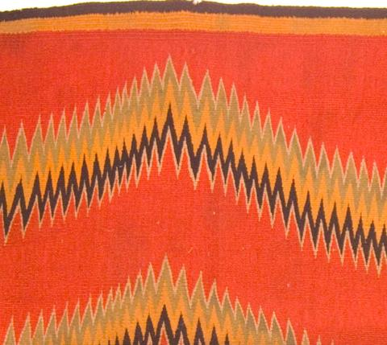
TextileBlanket 2148-612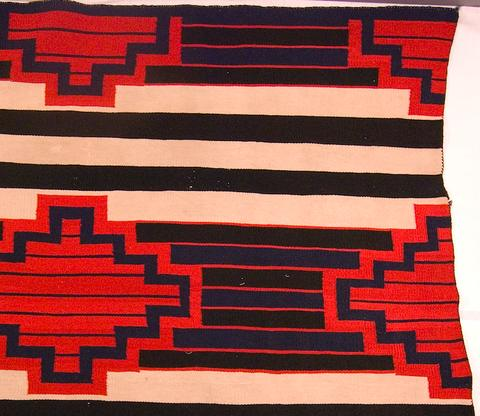
TextileChief Blanket 1074-101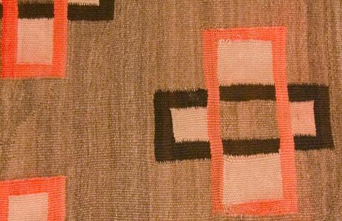
TextileRug 1654-131 TextileShoulder Blanket 1074-114
TextileShoulder Blanket 1074-114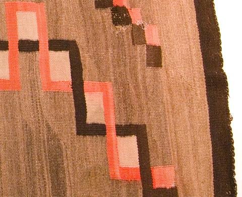
TextileRug 1654-131 PhotographBuffalo Dancer
PhotographBuffalo Dancer PhotographShrine to Americas: West Indies-Pueblo-Alacken-Aztec-Eskimo
PhotographShrine to Americas: West Indies-Pueblo-Alacken-Aztec-Eskimo Paper recordWilliams Collection: Catalog Cards
Paper recordWilliams Collection: Catalog Cards TextileWoven Sampler 2148-588
TextileWoven Sampler 2148-588 TextileChild's Blanket 1074-102
TextileChild's Blanket 1074-102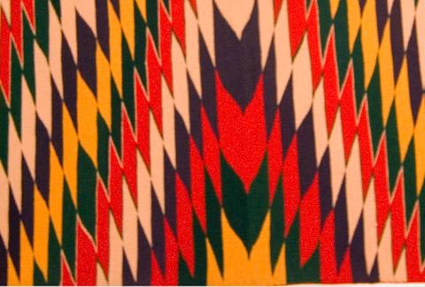
TextileSaddle Blanket 1074-112 Paper recordWilliams Collection: Catalog Cards
Paper recordWilliams Collection: Catalog Cards Paper recordWilliams Collection: Catalog Cards
Paper recordWilliams Collection: Catalog Cards TextileChief Blanket 2148-593
TextileChief Blanket 2148-593 PhotographShrine of the Americas: Plains – Andes – Mayas – Chimú – Jungles
PhotographShrine of the Americas: Plains – Andes – Mayas – Chimú – Jungles Paper recordWilliams Collection: Catalog Cards
Paper recordWilliams Collection: Catalog Cards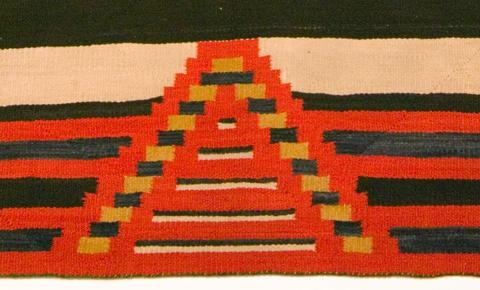
TextileChief Blanket 2148-606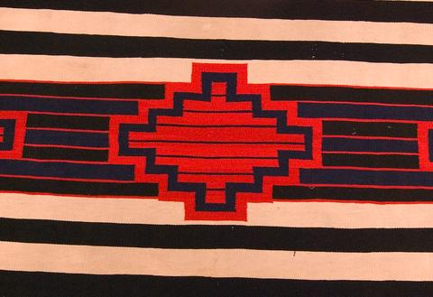
TextileChief Blanket 1074-101 Paper recordWilliams Collection: Catalog Cards
Paper recordWilliams Collection: Catalog Cards PhotographWith Hoffmann-palaniun
PhotographWith Hoffmann-palaniun Paper recordWilliams Collection: Catalog Cards
Paper recordWilliams Collection: Catalog Cards TextileChief Blanket 2148-606
TextileChief Blanket 2148-606 Paper recordWilliams Collection: Catalog Cards
Paper recordWilliams Collection: Catalog Cards![[Brochure page: "Solidarity of the Americas"]](photography/images/thumb/HRC-4851.jpg) Photograph[Brochure page: "Solidarity of the Americas"]
Photograph[Brochure page: "Solidarity of the Americas"]![[Williams in an embroidered western shirt with a saddle]](photography/images/thumb/HRC-5229.jpg) Photograph[Williams in an embroidered western shirt with a saddle]
Photograph[Williams in an embroidered western shirt with a saddle] TextileShoulder Blanket 1074-114
TextileShoulder Blanket 1074-114 PhotographStudio 1940
PhotographStudio 1940 PhotographBlack Lakes (near Taos)
PhotographBlack Lakes (near Taos)![[Williams with a horse at a log fence]](photography/images/thumb/HRC-5213.jpg) Photograph[Williams with a horse at a log fence]
Photograph[Williams with a horse at a log fence]![[Brochure page: lecture descriptions and press notices]](photography/images/thumb/HRC-4853.jpg) Photograph[Brochure page: lecture descriptions and press notices]
Photograph[Brochure page: lecture descriptions and press notices] TextileSaddle Blanket 1633-76
TextileSaddle Blanket 1633-76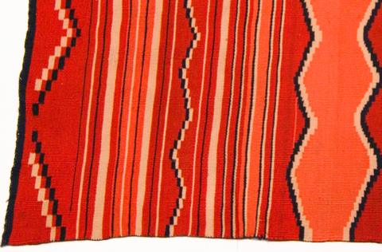
TextileChild's Blanket 1074-102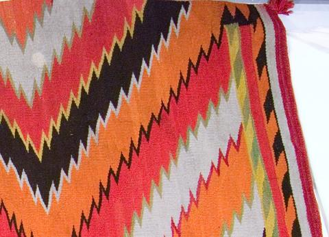
TextileRug 2148-611 Paper recordWilliams Collection: Catalog Cards
Paper recordWilliams Collection: Catalog Cards PhotographStudio 1940
PhotographStudio 1940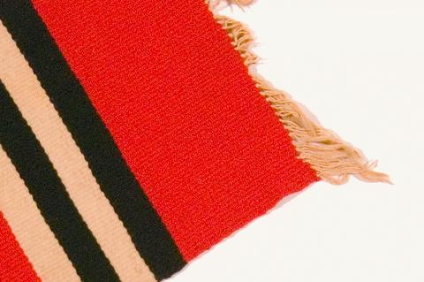
TextileWoman's Shawl 2148-586 Paper recordWilliams Collection: Catalog Cards
Paper recordWilliams Collection: Catalog Cards TextileShoulder Blanket 1074-114
TextileShoulder Blanket 1074-114 TextileBlanket 2148-612
TextileBlanket 2148-612 Paper recordWilliams Collection: Catalog Cards
Paper recordWilliams Collection: Catalog Cards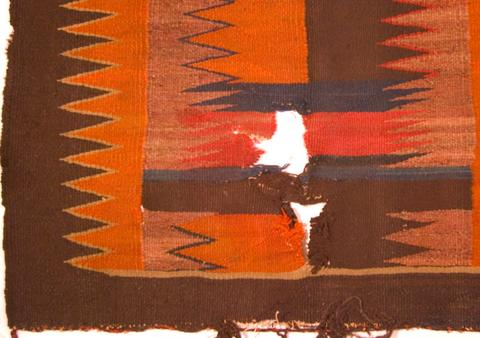
TextileSaddle Blanket 2148-622 TextileChief's Shoulder Blanket 1074-106
TextileChief's Shoulder Blanket 1074-106 Paper recordWilliams Collection: Catalog Cards
Paper recordWilliams Collection: Catalog Cards Paper recordWilliams Collection: Catalog Cards
Paper recordWilliams Collection: Catalog Cards TextileRug 1654-131
TextileRug 1654-131 Paper recordWilliams Collection: Catalog Cards
Paper recordWilliams Collection: Catalog Cards Paper recordWilliams Collection: Catalog Cards
Paper recordWilliams Collection: Catalog Cards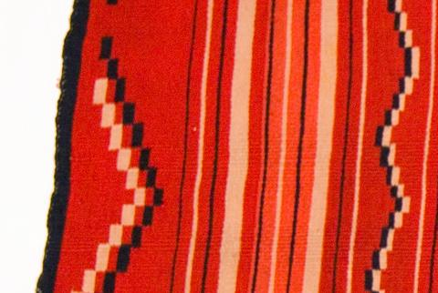
TextileChild's Blanket 1074-102 Paper recordPhotos Among Paperwork
Paper recordPhotos Among Paperwork TextileWoman's Shawl 2148-586
TextileWoman's Shawl 2148-586 PhotographMaid of Taos
PhotographMaid of Taos Paper recordPhotos Among Paperwork
Paper recordPhotos Among Paperwork Paper recordPhotos Among Paperwork
Paper recordPhotos Among Paperwork![[Brochure spread: the Shrine of the Americas]](photography/images/thumb/HRC-4854-2.jpg) Photograph[Brochure spread: the Shrine of the Americas]
Photograph[Brochure spread: the Shrine of the Americas]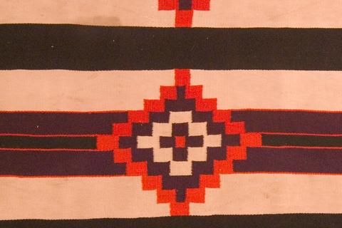
TextileChief Blanket 2148-593 Paper recordWilliams Collection: Catalog Cards
Paper recordWilliams Collection: Catalog Cards Paper recordWilliams Collection: Catalog Cards
Paper recordWilliams Collection: Catalog Cards![[Portrait of Williams in autumn]](photography/images/thumb/HRC-5219.jpg) Photograph[Portrait of Williams in autumn]
Photograph[Portrait of Williams in autumn] Paper recordPhotos Among Paperwork
Paper recordPhotos Among Paperwork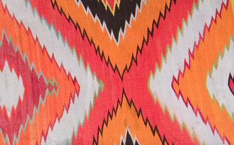
TextileRug 2148-611![[Brochure cover: "Frederic Allen Williams, Tenth Year of Lectures on the Arts of the Americas, Illustrated in Color"]](photography/images/thumb/HRC-4850-2.jpg) Photograph[Brochure cover: "Frederic Allen Williams, Tenth Year of Lectures on the Arts of the Americas, Illustrated in Color"]
Photograph[Brochure cover: "Frederic Allen Williams, Tenth Year of Lectures on the Arts of the Americas, Illustrated in Color"] TextileWoven Sampler 2148-588
TextileWoven Sampler 2148-588 PhotographAztec Turkeys – mask – Garden Garniture
PhotographAztec Turkeys – mask – Garden Garniture TextileSaddle Blanket 2148-622
TextileSaddle Blanket 2148-622 TextileChief Blanket 1074-101
TextileChief Blanket 1074-101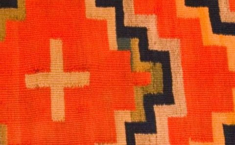
TextileBlanket 1654-129 Paper recordWilliams Collection: Catalog Cards
Paper recordWilliams Collection: Catalog Cards TextileSaddle Blanket 1633-76
TextileSaddle Blanket 1633-76 Paper recordPhotos Among Paperwork
Paper recordPhotos Among Paperwork TextileBlanket 1654-129
TextileBlanket 1654-129 Paper recordWilliams Collection: Catalog Cards
Paper recordWilliams Collection: Catalog Cards TextileSaddle Blanket 1633-76
TextileSaddle Blanket 1633-76 Paper recordWilliams Collection: Catalog Cards
Paper recordWilliams Collection: Catalog Cards